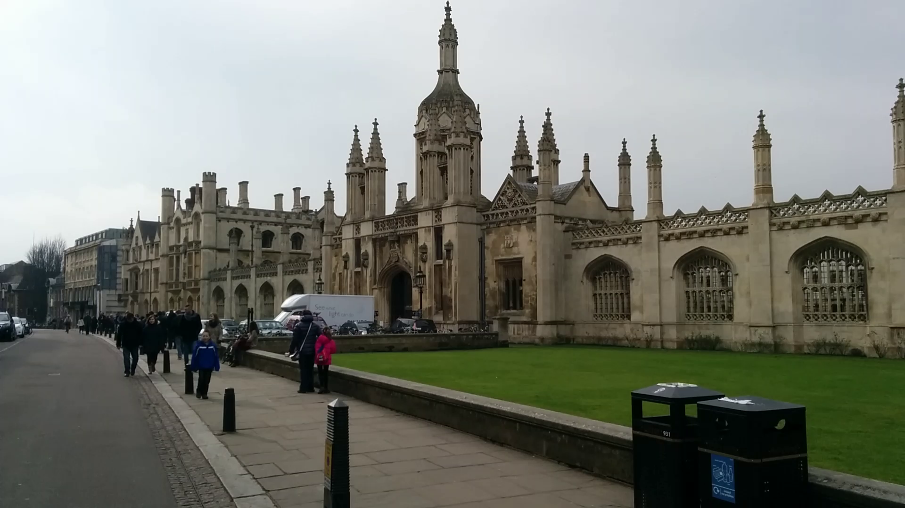
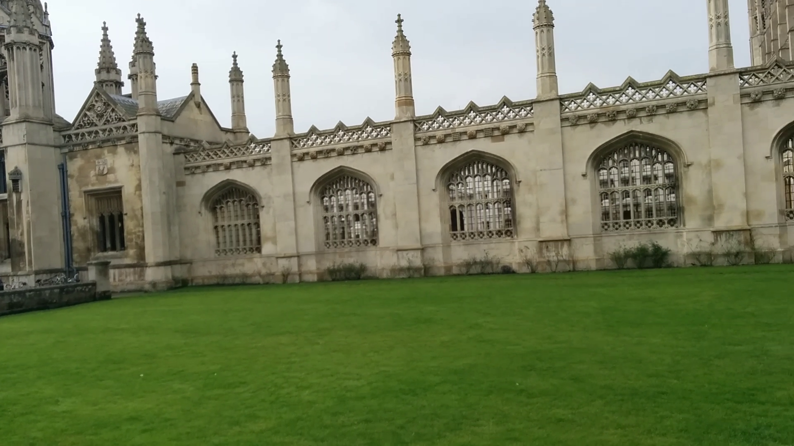
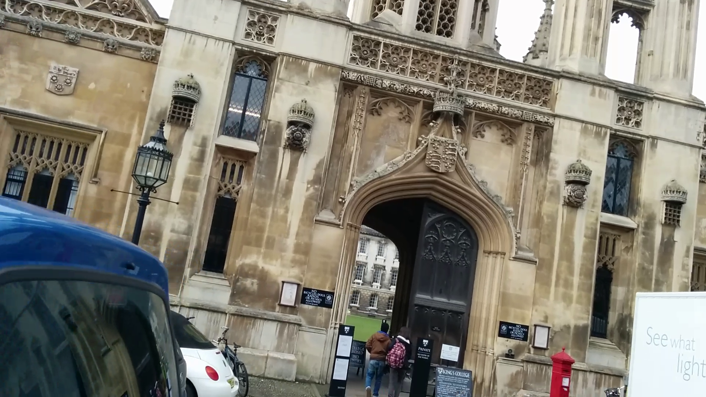
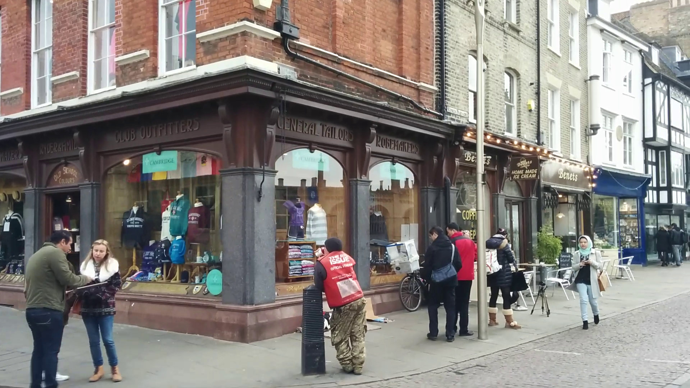
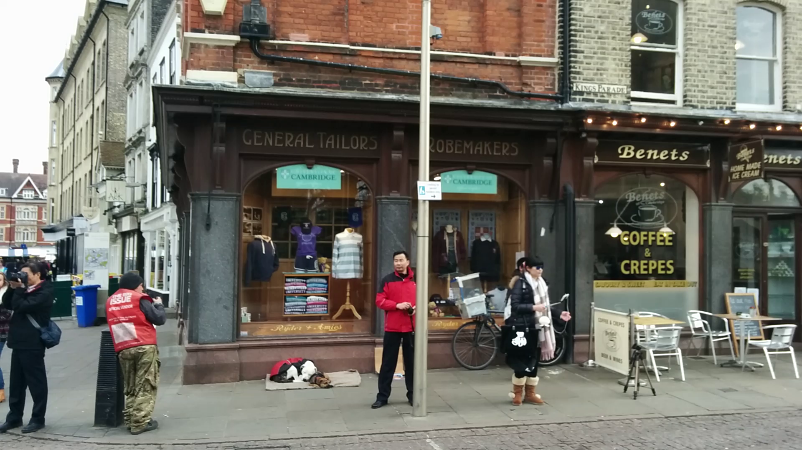
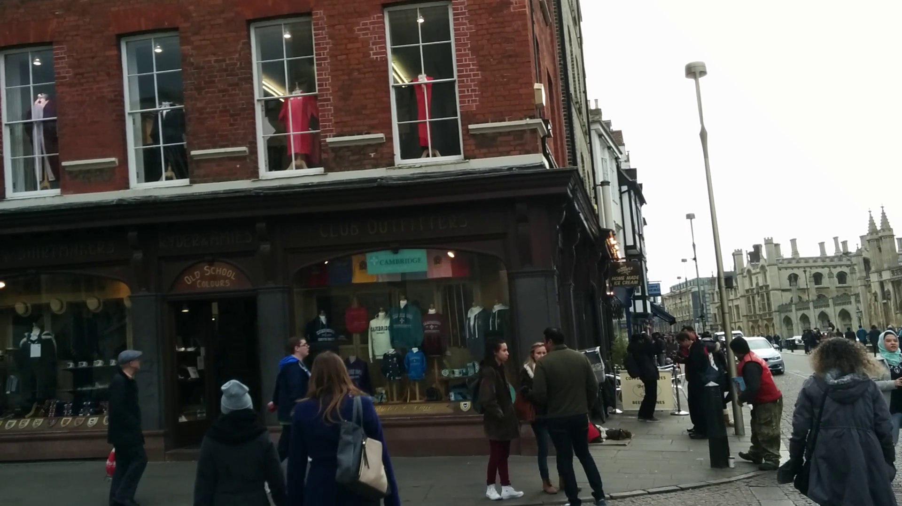
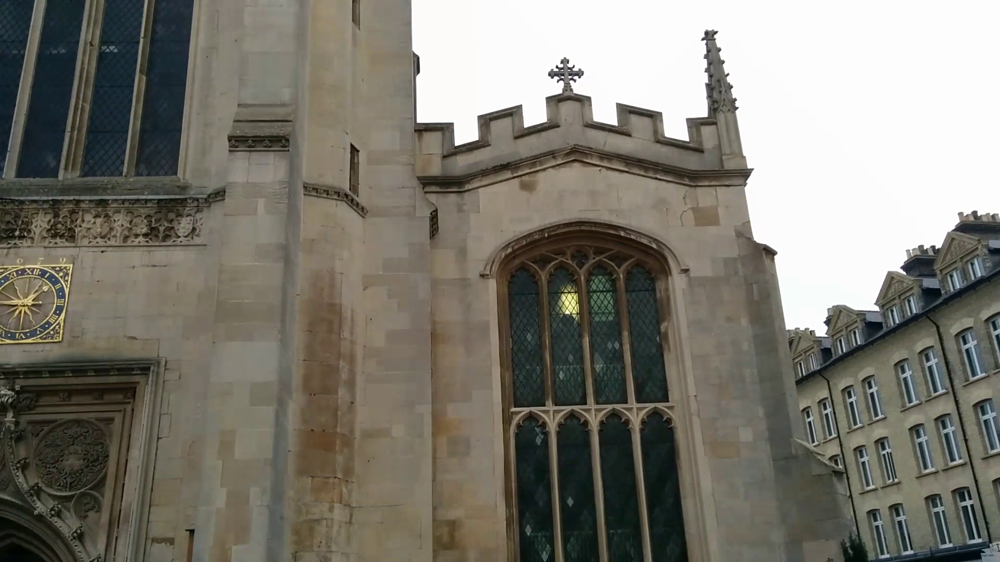
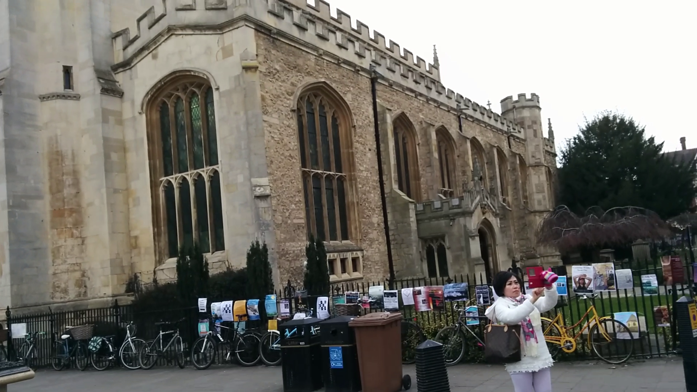

Abstract








@inproceedings{dillen2026on3r,
title={{Sparse–View Localization via Online Neural 3D Regression}},
author={Dillén, Ludvig and Oskarsson, Magnus and Larsson, Viktor},
booktitle={IEEE/CVF Conference on Computer Vision and Pattern Recognition},
year={2026}
}